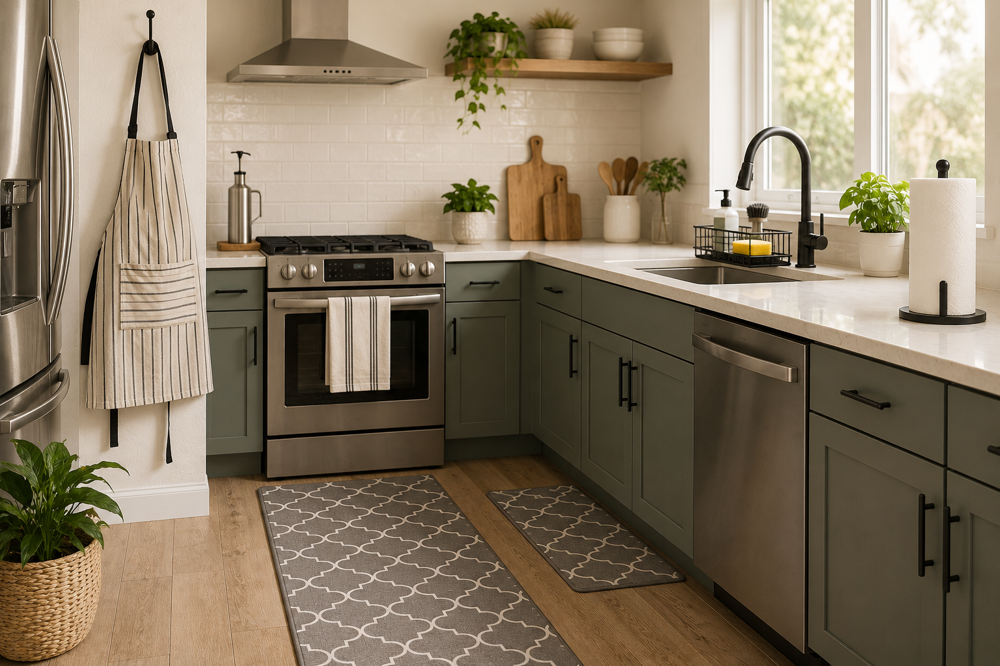
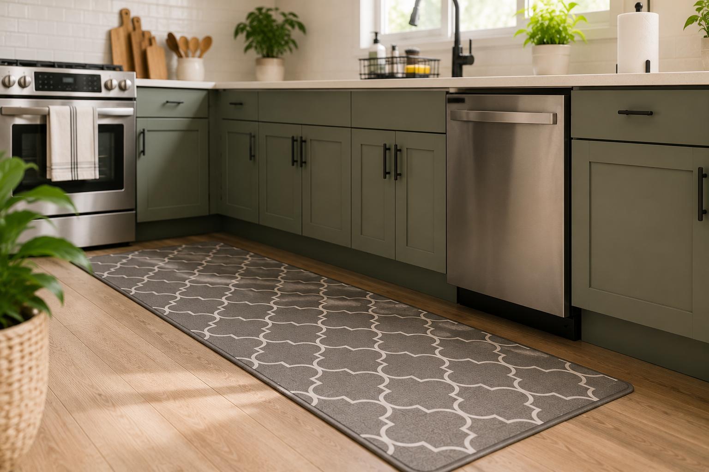
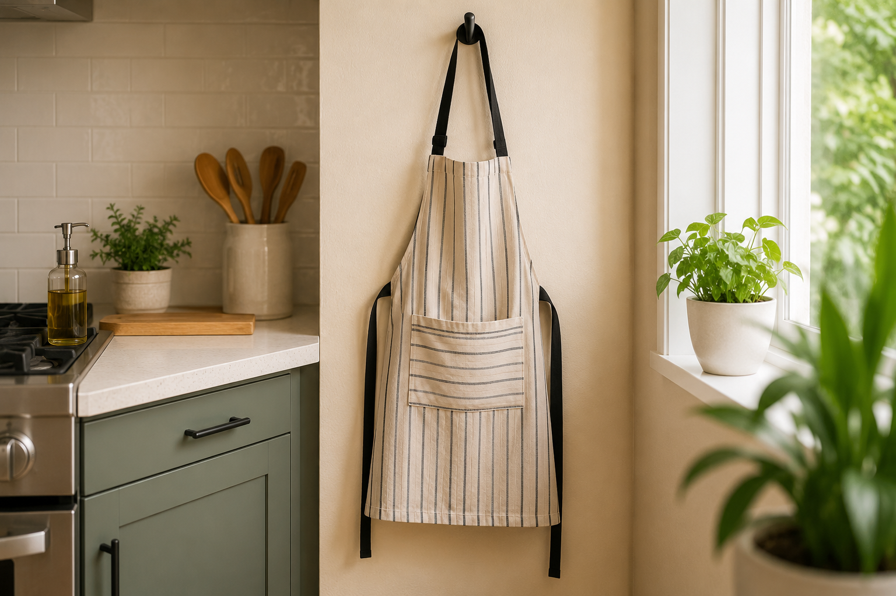
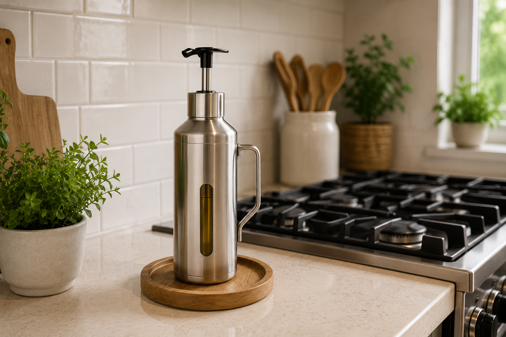
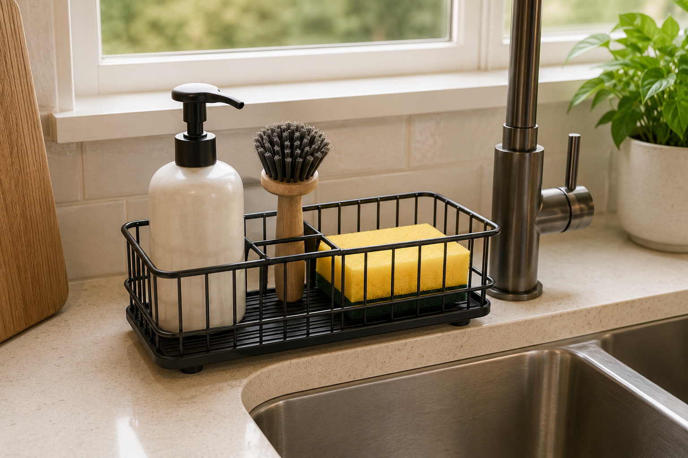
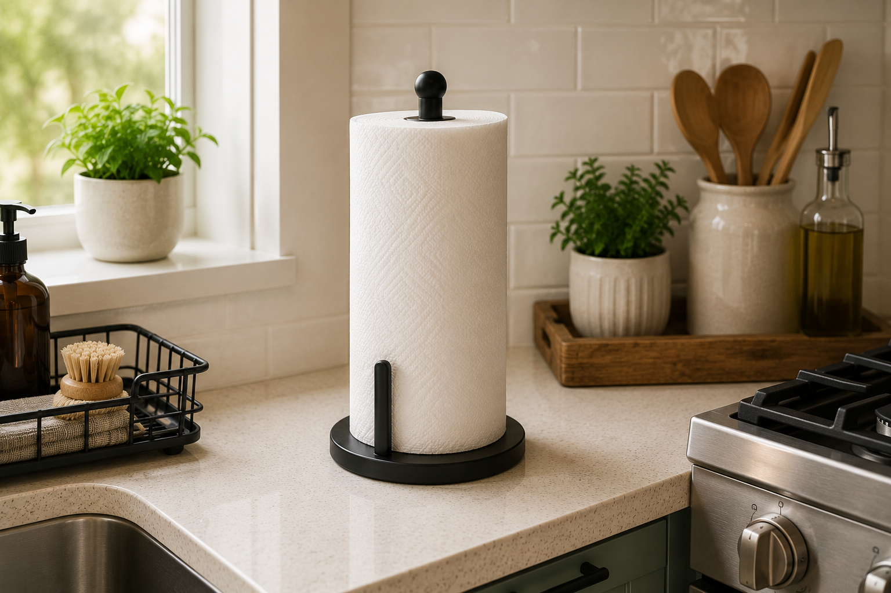

Introduction
A thoughtfully decorated living room can make your home feel more welcoming and comfortable. Small decor accents often have a bigger impact than major changes. Whether you're entertaining guests or relaxing after long day, the right accessoried can add warmth, personality, and style to your space.
In this article, we're highlighting fie stylish living room decor essentials that can help refresh your space. These decor pieces are affordable, and suitable for a variety of interior design styles.
Affiliate Disclosure: This article may contain affiliate links. If you purchase through these links, we may earn a small commission at no additional cost to you.
Quick Overview
| Product | Best For |
|---|---|
| Decorative Candles | Beautiful ambiance for a warm and cozy atmosphere |
| Coffee Table Books | Effortless syle with a touch of personality |
| Artificial Plants | Fresh greenery without the maintenance |
| Ceramic Vases | Simple elegance for any decor style |
| Decorative Trays | Chic organization for everyday essentials |
1. Non-Slip Kitchen Runner Rug Set

Standing for long periods while cooking can be tiring. A non-slip kitchen runner rug provides extra comfort underfoot while also adding warmth and style to your kitchen. The non-slip backing helps keep the rug securely in place, making it a practical addition to busy cooking areas.
Why We Like It
- Improves comfort while standing
- Helps reduce slipping
- Adds visual appeal
- Easy to maintain
2. Kitchen Apron

A good kitchen apron protects your clothing from spills, stains, and splashes. It's especially useful for home cooks who spend a lot of time preparing meals or baking. Many aprons also include pockets that keep small tools within easy reach.
Why We Like It
- Protects clothing
- Comfortable to wear
- Useful storage pockets
- Easy to wash and reuse
3. Stainless Steel Manual Hand Oil Pump

Pouring cooking oil directly from large bottles can often create spills and waste. A manual oil pump allows you to control the amount of oil you use, helping keep countertops cleaner while making cooking more convenient.
Why We Like It
- Better oil control
- Reduces mess
- Durable stainless steel construction
- Easy to refill
4. Sink Organizer

Sponges, scrubbers, dish soap, and brushes can quickly create clutter around the sink area. A sink organizer provides a dedicated place for these essentials, helping keep countertops cleaner and improving overall kitchen organization.
Why We Like It
- Organizes cleaning supplies
- Reduces clutter
- Easy access to frequently used items
- Helps maintain a tidy sink area
5. Paper Towel Holder

Paper towels are one of the most frequently used items in a kitchen. A sturdy paper towel holder keeps them easily accessible while preventing rolls from taking up unnecessary counter space.
Why We Like It
- Keeps paper towels organized
- Provides quick access during cooking
- Saves space
- Simple yet highly practical
Frequently Asked Questions
Are these kitchen products suitable for small kitchens?
Yes. Each product is designed to improve organization, convenience, or comfort without requiring much space.
Which product is most useful for everyday cooking?
All five products serve different purposes, but many people find the oil pump and sink organizer especially useful for daily kitchen tasks.
Can these products help make a kitchen look more organized?
Absolutely. Products like the sink organizer, paper towel holder, and runner rug can make a noticeable difference in how tidy and welcoming a kitchen feels.
Final Thoughts
Creating a more functional kitchen doesn't have to be complicated or expensive. Simple additions like a comfortable runner rug, a practical apron, an easy-to-use oil pump, a sink organizer, and a paper towel holder can improve your daily cooking experience while keeping your kitchen cleaner and more organized.
If you're looking for affordable kitchen upgrades, these five essentials are a great place to start.